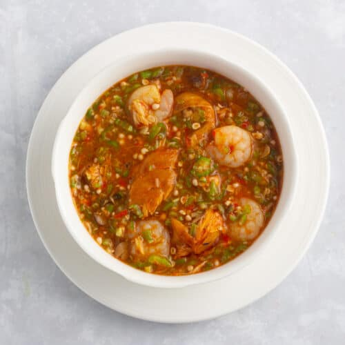

Okra Soup

Description
Okra soup is a flavorful dish made with okra, a vegetable also known as "lady's fingers." It's popular in many cuisines, especially in West Africa, the Caribbean, the Southern United States, and parts of the Middle East and India. The soup is known for its slightly slimy texture, which helps thicken the dish naturally.
Ingredients
- 1.5 lb Okra half minced and half sliced
- 1 red bell pepper
- Smoked Turkey wings
- 1 Small onion minced
- 1 habanero pepper
- 3 Tbsp crayfish
- 1/2 lb Spinach
- 1 lb shrimps
- 1 Dry Fish large
- 4 Tbsp Locust bean
- 1/2 to 3/4 cup Palm oil
- 1 Tsp Seasoning powder
- 4 to 5 cups water
Steps
-
Boil the Smoked Turkey wings with salt, seasoning powder and minced Onions. Cook till tender.
-
While the meat is boiling, mince half of the onions in a food processor or a chopper and slice the other half. Set aside
-
Mince the red bell pepper and habanero pepper in the chopper and set aside
-
When the meat becomes tender, add the minced pepper, crayfish, and locust bean and leave to cook for about 10 minutes.
-
Shred and add the washed dry fish and leave to soften for about five minutes.
-
Add the palm oil, shrimps and the minced and sliced okro. Leave to cook for about 3 to 5 minutes.
-
Stir in the spinach and mix until wilted.
-
Remove from heat immediately and serve.